The Development and Validation of an Offline Mobile Application for Bat Species Identification using Morphological Measurement
| Authors | Jerelle S. Espinosa, Erick D. Degalicia, Norilyn O. Belonio, Julliene Magsico, Hannah N. Pilarca, Nino Dale p. Depasucat, Christan Shane Plaza, Phillip Raymund R. De Oca |
|---|---|
| Volume | 3 |
| Date Published | December 29, 2024 |
| Date Updated | December 29, 2024 |
Abstract
With the inclusion of new and improved methods for identifying bat species, the use of a bat dichotomous key remains superior because it is more accessible and is the most often used identification tool. Despite this, the manual identification method remains time-consuming. In this study, we designed and developed an offline mobile application using bat morphological measurements by implementing the waterfall methodology. It was then assessed, in line with the eight characteristics of the ISO 25010 quality model criteria via a Likert scale; the mean scores were then calculated. Subsequent to the questionnaire, we collected user feedback from field users and experts on the app’s overall performance, which has been clustered into two main themes: Fulfilling its Function: BAT ID’s Practicality and BAT ID’s Potential for Improvement. Results show the mean score of the characteristic Functional suitability is 3.89, followed by reliability which is 3.78, portability being 3.50, usability with a score of 4.00, performance efficiency being 4.08, security characteristic with 3.38, compatibility being 3.54, and lastly maintainability with 4.00. Seven out of the eight characteristics are interpreted as effective, with the exception of security being moderately effective. Based on the findings, it is encouraged to develop an iOS-compatible version of the app to improve its user base accessibility. It is also suggested to revise the measurement ranges of the application to accompany the changing variations of bat morphology. Lastly, to contribute to the scientific understanding and decision-making for environmental citizen science, it is recommended that the application improve its citizen science qualities.
strong
The Philippine archipelago, with over 7000+ islands, is home to more than 79 bat species from seven families (Tanalgo & Hughes, 2018; Heaney et al., 2010). They are essential components of many ecosystems, providing functions that contribute both agriculturally and naturally, making their protection and conservation imperative. Accurate species identification via detailed determination of morphometric features is one approach toward their targeted conservation (Kunz et al., 2011; Tanalgo & Hughes, 2019 ). Ingle and Heaney's (1992) taxonomic key pioneered a systematic approach to bat identification in the country, providing detailed descriptions and external measurements used for bat identification (Tanalgo & Hughes, 2018).
As a foundational tool, the taxonomic key paved the way for a more comprehensive bat identification method that advanced research on Philippine bat diversity (Quibod et al., 2019; Relox et al., 2014; Tanalgo et al., 2015; Lama et al., 2023). The "Synopsis of the Philippine Mammals" by Heaney et al., (1998) which was updated in 2010 augmented the current data on the Philippine bats, providing vital information on their state and risks to conservation (Heaney et al., 1998). Such efforts align with the targets of Kunming-Montreal Global Biodiversity Framework, which guides interventions to conserve biodiversity and ecosystems through 2030 via active management of species and collection of essential data for genetic diversity (Obura et al., 2023; Hughes & Grumbine, 2023).
Several methods have been used for identifying bat species (Hooper et al., 2017; Chen et al., 2020; Schlottau et al., 2020). One common strategy is via automated acoustic monitoring (Frick, 2013). However, similar to other software, there are low agreement rates, necessitating confirmation through manual analysis (Wildlife Acoustics, 2018; Lemen et al., 2015). Likewise, in the study of Krivek et al. (2023), a deep learning-based tool was utilized to automate bat species identification, but only limited to bats that predominantly use underground sites as hibernacula.
With the inclusion of new and improved methods for identifying bat species, the use of a bat dichotomous key remains superior because it is more accessible and is the most often used identification tool (Tofilski, 2018). Despite this, the manual identification method remains time-consuming (Cao et al., 2023). Therefore, this study aims to develop an offline mobile application using bat morphological measurements for identification and validate the application performance using the ISO 25010 quality model criteria.
Specifically, this innovation aims to design and develop an offline mobile application using bat morphological measurements from the taxonomic key of Ingle and Heaney's (1992), assess the usability, performance, and reliability of the application using the ISO 25010 quality model criteria, and evaluate user feedback collected from field users and bat identification experts.
strong
This study aims to develop an automated identification application that utilizes user input to identify bat species with their corresponding range of biometric measurements. Through multiple studies regarding application development, various materials and steps were considered for the application development as follows:
Integrated Development Environment - Modern integrated development environments make recommendations on codes and also automate everyday tasks, such as refactorings, auto-completion, and error corrections. Nevertheless, these technologies offer minimal or no information regarding the effects of the recommended adjustments. For instance, a rename refactoring may modify the original code without altering program semantics; it can alter the original code and (incorrectly) change program semantics; it can change the original code and (incorrectly) create compilation errors. Examples of IDE are Visual Studio Code (VS Code), PyCharm, Sublime, Xcode, and etc.
Figma - A web-based tool for collaborative design that designers and participants use for interface design and prototyping.
High-Processing PCs / Laptops - During the application development process, a portable computer equipped with components meant to manage complex tasks and graphic-intensive programs more rapidly and effectively is helpful for teams who operate remotely or in different locations since it enables numerous users to work on designs simultaneously in real-time.
A Programming Language - React Native is a language used in valuable programming for a wide range of users, including beginning programmers, experienced iOS developers, and those starting in the field. One may include it in your current Android and IOS projects or start from scratch when developing an app.
strong
A programming language, namely “React Native,” was used in this study as it offers a significant advantage. About 85% – 95% of the code may be reused by developers across the iOS and Android platforms. This greatly cuts down on the time and effort needed for development, allowing for quicker deployment and simpler platform-neutral application maintenance (Shiv Technolabs Private Limited, 2023; D’Ambra, 2018; Atha, 2022; Agarwal, 2024).
With the React Native framework, developers are relieved of the necessity to craft distinct codes tailored for iOS and Android platforms. Leveraging JavaScript, compatible with both systems, facilitates seamless code reuse, enhancing efficiency and expediting the app development process (Churylov, 2024; Mannotra, 2024; Agarwal, 2024). React Native delivers a polished, fluid, highly responsive user interface while reducing load times. Moreover, it offers expedited and cost-effective app development compared to native alternatives without sacrificing quality or functionality (Agarwal, 2024; Churylov, 2024; Mannotra, 2024 ).
“Key to the Bats” by Nina R. Ingle and Lawrence R. Heaney was used to utilize React Native as a programming language and guide app development, such as identifying the forearm, tail, hindfoot, ear, total length, and weight measurements.
strong
The waterfall methodology was introduced by Winston Royce in 1970, and modern project management methodologies such as PRINCE2 and PMBOK have all evolved from the waterfall methodology. These two are widely used in project management methodologies in Europe and North America. The Waterfall Methodology treats the projects as a linear process consisting of sequential stages. Each stage needs to be formally validated before moving to the next stage; teams engage in planning, carrying out, and reviewing cycles. Hence, this reduces the complexity of an ES implementation process (Aroral, 2021).
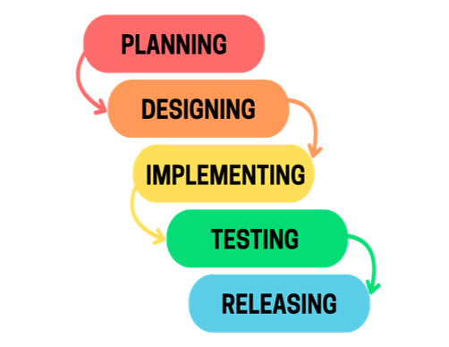
*Figure 1.* Waterfall Methodology
It consists of 5 phases: planning, designing, implementing, testing, releasing. The Waterfall Methodology is one of the first system development life cycles (SDLC) instituted and is still widely used today for systems development. The waterfall model was first recorded in 1956 by Herbert D. Bennington, who proposed that software be enhanced in stages. However, the model was revised by Winston Royce in 1970 by presenting a feedback loop so that each stage within the model could be re-examined. Many researchers commend the Waterfall model for its simplicity compared to other system development life cycles. The Waterfall methodology process has varied over the years but still consists of five distinct areas: system conceptualization, analysis, design, coding, and testing (Aroral, 2021).
Application Planning
The planning includes the application’s user interface, user experience, features, programming language, and Integrated Development Environment. This plan was utilized in order to meet the application requirements and satisfy users.
Design Interface
A low-fidelity wireframe was drawn from scratch and transferred into Figma. It is a software that allows users to design wireframes ranging from low to high fidelity. With its advanced system, Figma enables individuals to create prototypes, allowing for an easy user interface creation.
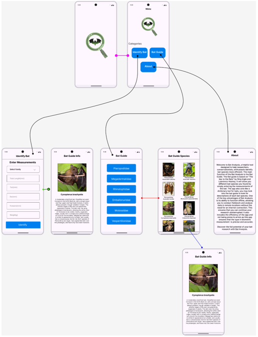
*Figure 2.* Design Interface
Main Page: This page shows various buttons that offer a range of functions, leading to different features: Identify Bat button, Bat Guide, and About, ensuring a comprehensive user experience.
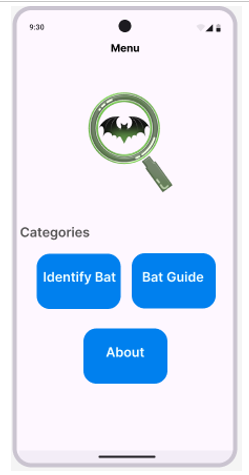
*Figure 3.* Main Page
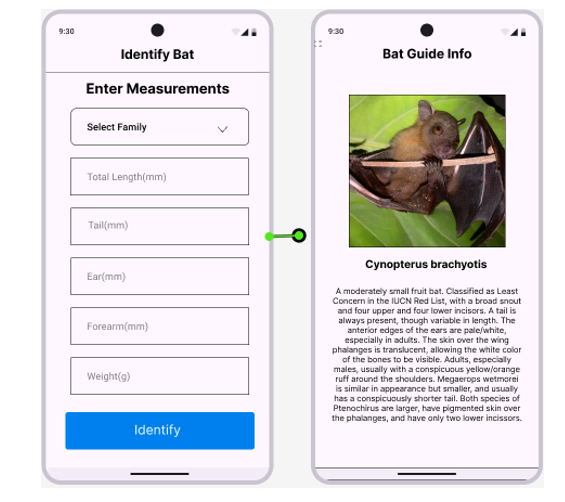
*Figure 4.* Bat Identification
Identify Bat: This section contains the main function of the application, which is to automatically identify bats using morphometric measurements. The section leads to different input boxes to insert the measurements of the bats: (1) Total Length (mm); (2) Tail (mm); (3) Ear (mm); (4) Forearm (mm); (5) Weight (g); (6) Hindfoot (mm). After inserting, the bat species will be automatically displayed after the required measurements are met. Otherwise, it will display “No match found” if the measurement did not meet the expected range. Additionally, if two or more bat species have the same set range of measurements, the system will show the list of possible bat species, allowing users to freely explore and identify it.
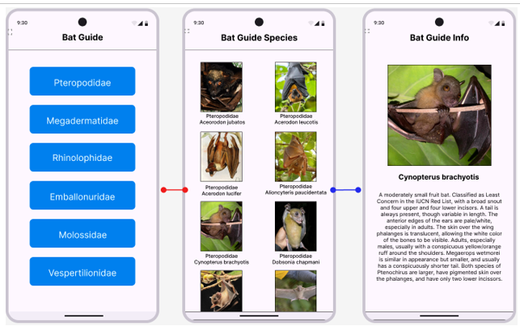
*Figure 5.* Bat Guide
Bat Guide: This system will act like a dictionary but for bats. The buttons available here offer a comprehensive range of bat families and species, each carefully presented through vivid imagery and detailed descriptions. This enables users to differentiate and characterize bats through family and species.
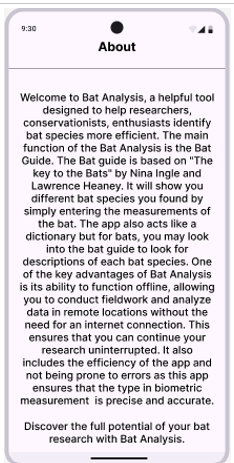
*Figure 6.* About
About Button: This section provides the purpose and functionality of the application.
Implementation of Application
The application was developed using Visual Studio Code as IDE and React Native as a programming language. React Native features include the ability to run and interact with projects and view how they render in Android or IOS through a Snack Player, allowing users to fix errors and have a preview of an application quickly.
The development process includes the flow of the application and compiling data for bat images and information from “Key to the Bats” and from the website of “Synopsis of Philippine Mammals.” Key to the Bats was the main source of the application development. The measurement ranges of the forearm, tail, hind foot, ear, total length, and weight measurements of at least 10 adult Philippine bat species, except when sample sizes are given in parentheses [e.g.,(5) 64-70]. The measurement ranges that were used in the app development process are listed in Tables 1, 2, 3, 4, and 5. Lastly, the hyphen (-) measurements were considered as 0 in coding the app.
*Table 1.* Family Pteropodidae
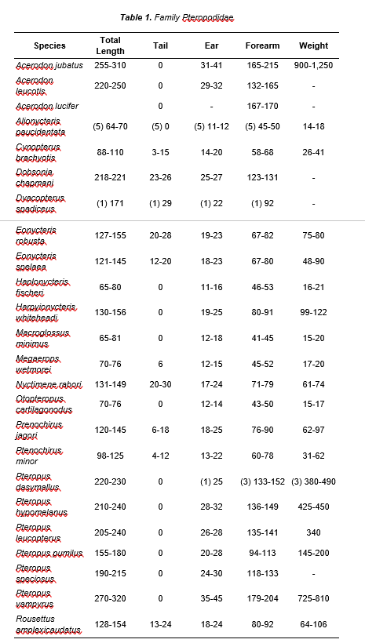
*Table 2.* Family Megadermatidae and Emballonuridae
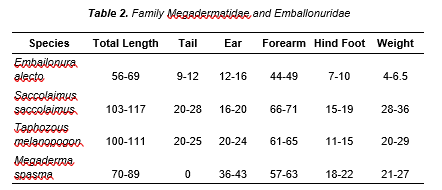
*Table 3.* Family Molossidae
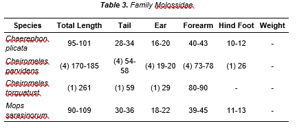
*Table 4.* Family Rhinolophidae
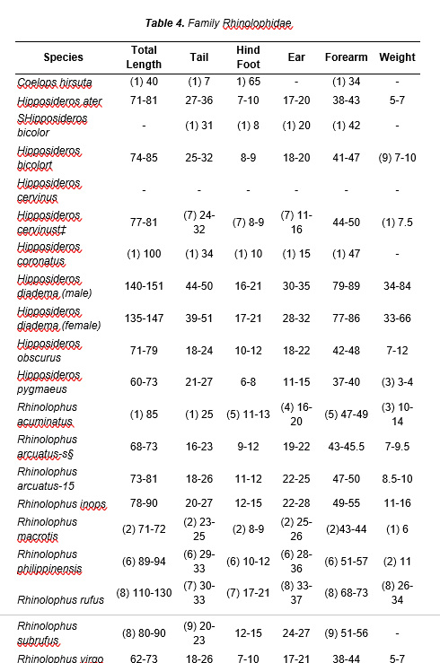
*Table 5.* Family Vespertilionidae
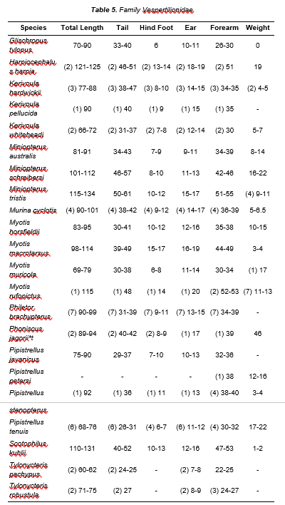
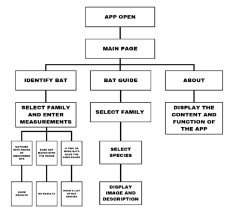
*Figure 7.* Application Flowchart
Application Flow.** In the figure above, upon running the app, users can choose between three categories: (1) Identify Bat, (2) Bat Guide, and (3) About. The first category functions by utilizing user input to obtain the needed data for identification. Results will be shown if the measurements match a species. Meanwhile, the second category contains the list of bat families and species, which contains different images and descriptions. Lastly, the About category was established to provide users with the application's functionality and purpose.
Testing Phase of the Application
Data Analysis
The ISO 25010 quality model criteria was used to assess the application which consists of 8 characteristics that are related to the dynamic and static properties of a computer system. The characteristics and sub characteristics provide a consistent term for defining, measuring, and evaluating the quality of systems and software (Gade, 2013). Under the ISO 25010, there are 8 characteristics, respectively: functional suitability, reliability, portability, usability, performance efficiency, security, compatibility, and maintainability.
Functional Suitability. It is the degree to which a system or product provides a function that meets the given needs when utilized under certain conditions. This characteristic has three sub characteristics, namely: Functional Completeness, Functional Correctness, and Functional Appropriateness (Pratama & Mutiara, 2021; Urera & Balahadia, 2019).
Reliability. It describes how well a system, product, or component executes a given function under specified conditions for a particular amount of time. This characteristic consists of sub-characteristics, namely: faultlessness, availability, fault tolerance, and recoverability. It ensures that when the app is used, it can function properly without disruption (Pratama & Mutiara, 2021; Urera & Balahadia, 2019).
Portability. It describes the degree of Effectiveness and efficiency with which a system or product transferable from one hardware, software, or other from one operating or use environment to another. This characteristic consists of sub-characteristics, namely: Adaptability, Durability, Installability, Replaceability, Affordability (Pratama & Mutiara, 2021; Urera & Balahadia, 2019).
Usability. It Indicates if a system or product can be used by specific users to accomplish specific goals in a given context of usage with efficacy, efficiency, and satisfaction (Pratama & Mutiara, 2021; Urera & Balahadia, 2019).
Performance Efficiency. It represents performance relative to the resources used under the stated conditions. This characteristic consists of sub-characteristics, namely: Time Behavior, Resource Utilization and Capacity (Pratama & Mutiara, 2021; Urera & Balahadia, 2019).
Security. Is the characteristic used to determine how well a system or product protects information and data with a level of data access based on the type and level of authorization. This characteristic consists of sub-characteristics, namely: Confidentiality, Integrity, Non-repudiation, Accountability, and Authenticity (Pratama & Mutiara, 2021; Urera & Balahadia, 2019).
Compatibility. It refers to how well a system or product can share information or execute needed operations with other systems or products while operating in the same environment. This characteristic consists of sub-characteristics, namely: Coexistence and Interoperability (Pratama & Mutiara, 2021; Urera & Balahadia, 2019).
Maintainability. The apps' maintainability was measured using the following sub-criterion: modularity, reusability, analyzability, modifiability, and testability. The system's maintainability facilitates user-driven alterations while preserving its quality. This characteristic allows for continuous improvements, corrections, and adaptations that align with evolving user needs (Pratama & Mutiara, 2021; Urera & Balahadia, 2019).
Validation of Application
During the testing phase, the ISO 25010 questionnaire was used to evaluate the application's performance and functionality. The mean score of the questionnaire was calculated prior to the user's answers. Likert scale were then used to associate users’ satisfaction and interpretation (see Table 6).
*Table 6.* Likert scale

Releasing of Application
Prior to the release of the application, multiple validations from field users and bat biologists were done via invitations from Messenger and Gmail containing the app’s apk file and questionnaire. The application's requirements were carefully laid out to make it easy and accurate to identify bat species using measurements; this included features like automatic offline identification and an easy-to-use interface. An APK will then be released in the market with continuous improvements from user feedback.
strong
This study aims to develop and validate an offline mobile application using bat morphological measurements for species identification, based on the ISO 25010 quality model criteria. After a careful analysis of the data, the following results were obtained.
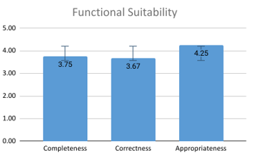
*Figure 8.* Functional Suitability
Figure 8 shows the results of the ISO 25010 questionnaire on characteristic “Functional Suitability”. The graph above shows how satisfied users are on a scale of 1 (Very Ineffective) to 5 (Very Effective).
Functional completeness refers to the extent to which all tasks and objectives of the intended users are covered by the set of functions ("ISO/IEC 25010:2011 Quality Models", 2011; Urera & Balahadia, 2019). The graph above shows that the average score of functional completeness is 3.75, interpreted as “Effective”. It indicates that users are satisfied while using the application as the application’s set of functions provide what users need, for instance, if users want to identify bat species using morphometric measurement, the application system contains this. Furthermore, the application system also contains a bat guide which acts as a dictionary for bat species, so when users utilize the function they can easily navigate and gain comprehensive information about bat species.
Correctness refers to which the system of an application can provide accurate results when used by users ("ISO/IEC 25010:2011 Quality Models", 2011; Urera & Balahadia, 2019). Based on the graph above, the overall average of functional correctness is 3.67, interpreted as “Effective”. The average score demonstrates that it is above average, which implies that users are mostly satisfied with it when using the application for identifying species as the system utilizes the guide book “A Key to the Bats of the Philippine Islands” for the basis of morphometric measurements. Thus, when users are identifying bats, they can easily identify it by typing the measurement and the system will provide results based on the guide book.
However, a notable issue was also found in terms of accuracy as the application is dependent on “A Key to the Bats of the Philippine Islands” range of measurement and since the guide was created decades ago, the measurement could be outdated, which means even though it is the same species and users have different bat measurement, the system would flag it as “Incorrect Measurement”.
Appropriateness refers to the extent to which the functions make it easier to complete certain tasks and goals ("ISO/IEC 25010:2011 Quality Models", 2011; Urera & Balahadia, 2019). The graph above shows that the mean score of functional appropriateness is 4.25, interpreted as “Effective”. The mean score indicates that users are satisfied when using it – as the application is appropriate mostly for new users, which means that when users are using the application, they can easily navigate through the application system and users can easily complete their tasks.
Overall, the average score of Functional suitability attribute is 3.89, interpreted as “Effective”, which indicates that users are mostly satisfied with the application’s functionality and system prior to their objective. However, the average score of each sub-characteristics also shows that there is still room for improvements for the mobile application functions. Mainly, the functional correctness, which has the lowest average score among all three characteristics indicates that the application could still be improved in terms of accuracy. Then, followed by functional appropriateness, which has the highest average among three characteristics signifies that the application's system makes it easier to complete their goal.
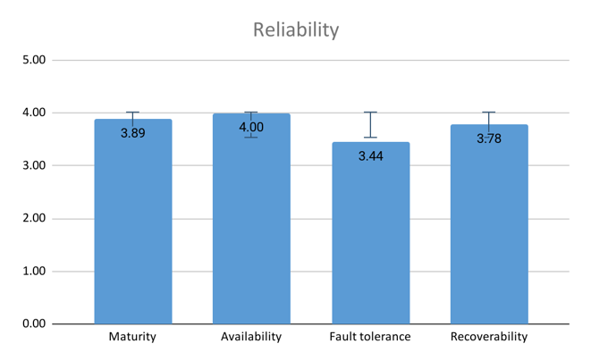
*Figure 9.* Reliability
The graph above (figure 9) depicts the Reliability of the developed application on a scale of 1 (Very Ineffective) to 5 (Very Effective). In the sub characteristic “Maturity”, which denotes the extent to which a system, product, or component fulfills requirements for reliability, the app’s mean score is 3.89, interpreted as “Effective” based on the Likert scale. It indicates that users are satisfied with the app's Maturity by providing reliable information and bat species results under normal operation ("ISO/IEC 25010:2011 Quality Models", 2011).
The sub-characteristic Availability refers to the extent to which a system or product is functional and available for accurate results when used by users. Based on the graph above, the overall average concerning its availability is 4.00, interpreted as “Effective”, it implies that users are satisfied with how accessible the application is when required for use ("ISO/IEC 25010:2011 Quality Models", 2011).
The sub-characteristic Fault tolerance refers to the extent to which a system, product, or component functions as intended in spite of the presence of hardware or software faults. Based on the graph above, the overall average concerning its Fault tolerance is 3.44, interpreted as “Effective”, it implies that when users utilize the application, it can withstand faults and still serve its intended purpose ("ISO/IEC 25010:2011 Quality Models", 2011).
The sub-characteristic Recoverability refers to the extent to which a system or product can function in the case of a disruption or failure and restore the data and return the system to its intended condition. Based on the graph above, the overall average concerning its Fault tolerance is 3.78 which is interpreted as “Effective”, it implies that users are satisfied with its recoverability by retrieving previous data and re-establishing the desired state of the system ("ISO/IEC 25010:2011 Quality Models", 2011).
In summary, the average score of the Reliability characteristic is 3.78, interpreted as “Effective”, indicating that users are mostly satisfied with the application’s reliability due to its faultlessness and being true towards its functions.
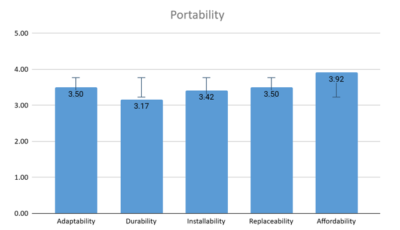
*Figure 10.* Portability
Figure 8 shows the results of the ISO 25010 questionnaire on one of the characteristics Portability On a scale of 1 (Very Ineffective) to 5 (Very Effective), the graph above shows how satisfied users are.
Adaptability refers to the extent to which a product or system can be effectively and efficiently modified to accommodate various or evolving hardware, software, or operational environments ("ISO/IEC 25010:2011 Quality Models", 2011; Urera & Balahadia, 2019) The graph above shows that the average score of functional completeness is 3.50, interpreted as “Effective”. It indicates that users express satisfaction with the application’s compatibility across various Android versions, however, it is noteworthy that an iOS version of the application is currently unavailable, which may restrict its user base.
Durability refers to the degree to which a product or system can endure technological advancements and changes without incurring significant costs related to redesign, reconfiguration, or recoding ("ISO/IEC 25010:2011 Quality Models", 2011; Urera & Balahadia, 2019). Based on the graph above, the average score of “Durability” is 3.17 interpreted as “Moderately effective”. It indicates that users express an average satisfaction with the application as it maintains its functionalities and performance over time, although it may require periodic updates to ensure compatibility with the latest operating systems and devices.
Installability pertains to the degree to which a product or system can be effectively installed and uninstalled within a designated environment ("ISO/IEC 25010:2011 Quality Models", 2011). Based on the graph above, the overall average of “Installability” is 3.42, interpreted as “Moderately effective”. The mean score indicates that users express an average satisfaction regarding “Installability” as it allows users to install and uninstall the application with minimal effort across various android versions.
Replaceability pertains to which a product can serve as a substitute for another specified software product with the same functionality within the same environment ("ISO/IEC 25010:2011 Quality Models", 2011; Urera & Balahadia, 2019). Based on the graph above, the overall average of “Replaceability” is 3.50, interpreted as “Effective”. The mean score indicates that users express satisfaction regarding “Replaceability” as the application is designed to be updated in response to the availability of newer versions.
Affordability refers to the extent to which a product or system can enhance efficiency and productivity by minimizing the time and costs associated with the delivery of instructions ("ISO/IEC 25010:2011 Quality Models", 2011). Based on the graph above, the overall average of “Replaceability” is 3.92, interpreted as “Effective”. The mean score indicates that users express satisfaction regarding “Affordability” as the application utilizes readily available technology and enhances efficiency by hastening the identification process when compared to traditional means, thereby saving time.
Overall, the average score of Portability attribute is 3.50, interpreted as “Effective”, indicating that users are mostly satisfied with the application’s portability due to its inherent capability to facilitate porting activities. However, an iOS version of the application is not currently available.
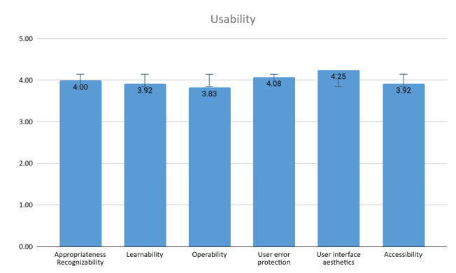
*Figure 11.* Usability
Figure 11 shows the “Usability” of the developed application. On a scale of 1 (Very Ineffective) to 5 (Very Effective) this indicates the users satisfaction with the app’s performance.
Appropriateness Recognizability refers to which users can recognize whether a product or system is appropriate for their needs ("ISO/IEC 25010:2011 Quality Models", 2011; Urera & Balahadia, 2019; Pratama et.al., 2021) . The graph's average score for the appropriate recognizability is 4.00, interpreted as “Effective” which implies that the users are pleased with the performance of the app and found it effective in meeting their needs.
Learnability refers to which specified users can learn to use the functions of a product or system within a specified timeframe ("ISO/IEC 25010:2011 Quality Models", 2011; Urera & Balahadia, 2019; Pratama et.al., 2021). The graph above shows that the average score for the Learnability test is 3.92, interpreted as “Effective”. This indicates that the users were content with the app's function and performance, the system assisted the users to meet their needs by learning about the app's functions in a specific amount of time.
Operability refers to which a product or system possesses attributes that facilitate its operation and control ("ISO/IEC 25010:2011 Quality Models", 2011; Urera & Balahadia, 2019; Pratama et.al., 2021). The graph implies that this attribute is interpreted as “Effective” as the average score is 3.83. This indicates that the users were able to quickly learn how to use the app and perform the tasks they needed to do. It is also efficient because the app does not consume that much time in learning how to use the app.
User error protection refers to a system designed to prevent users from making errors during operations ("ISO/IEC 25010:2011 Quality Models", 2011; Urera & Balahadia, 2019; Pratama et.al., 2021). The average score for the User error protection is 4.08 as shown in the graph, this shows that this attribute is interpreted as “Effective”. This suggests that the system was effective at minimizing user errors, leading to a positive user experience. By reducing these mistakes, users were able to interact with the system more smoothly and provide them with an accurate result.
User interface aesthetics refers to users’ tendency to perceive attractive products as more usable (Moran, K, 2024). The average score for the User Interface is 4.25 as shown in the graph, this shows that this attribute is interpreted as “Effective”. This shows that the users responded positively to the app’s aesthetics. The app's appearance was visually appealing which engaged positive feedback from the users. Though the application’s visual is simple it can still improve in the future.
Accessibility refers to how well a product or a system can be used by people with a wide range of abilities and needs ("ISO/IEC 25010:2011 Quality Models", 2011). The graph above shows the average score for the Accessibility which is 3.92, this is interpreted as “Effective”. This indicates that the users were pleased with the application's ability to provide various features and capabilities while operating.
Overall, the usability had an average score of 4.00, interpreted as “Effective” according to the Likert scale. This shows that most of the users were content with the applications performances and system function. Though, having an average score that is labeled as effective, there is still more room for improvement for the app's functionality and performance. Specifically, the Operability, which is rated as the lowest among the other sub-characteristics with an average score of 3.83. This indicates that the app needs more improvement on how the app operates. Followed by, user interface aesthetic interpreted as the highest average score of 4.25. This signifies that the user interface of the application is visually appealing to the users.
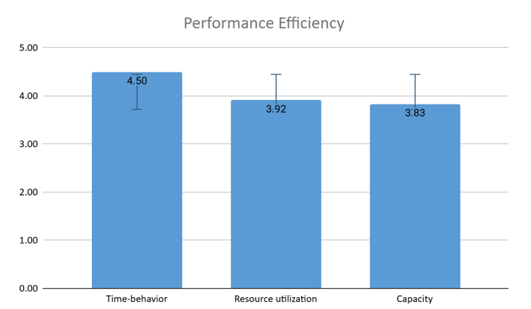
*Figure 12.* Performance Efficiency
Figure 12 shows the results of the ISO 25010 questionnaire on one of the characteristics, “Performance Efficiency.” On a scale of 1 (Very Ineffective) to 5 (Very Effective), the graph above shows how satisfied users are with the app's performance.
Time behavior refers to the response time and throughput rate, aiming for fast and responsive performance ("ISO/IEC 25010:2011 Quality Models", 2011; Pratama et.al., 2021) . The graph above shows that the average score of time behavior is 4.50, interpreted as “Very Effective”. This indicates that users are highly satisfied with the application's speed and responsiveness, as it swiftly processes inputs, efficiently utilizes resources, and provides accurate identification results with minimal delay, enhancing the overall user experience by meeting their needs effectively.
Resource utilization refers to the app’s ability to monitor and manage memory and storage usage efficiently ("ISO/IEC 25010:2011 Quality Models", 201; Urera & Balahadia, 2019). Based on the graph above, the overall average of resource utilization is 3.92, interpreted as Effective. This implies that when users are identifying bat species, the app efficiently manages resources to ensure smooth performance without overloading memory or storage, allowing it to handle extensive data processing seamlessly while maintaining accuracy and responsiveness in real time.
Capacity refers to the extent to which the app can handle the maximum number of identifiable bat species and the efficiency of the identification algorithm ("ISO/IEC 25010:2011 Quality Models", 2011; Pratama et.al., 2021). The graph above shows that the mean score of capacity is 3.83, interpreted as “Effective”. This score indicates that when users identify a large variety of bat species, they are satisfied with its capacity to handle numerous species efficiently, as the identification algorithm processes complex data smoothly and provides accurate results, even during intensive use.
Overall, the average score of the performance efficiency attribute is 4.08, interpreted as “Effective.” This indicates that users are generally satisfied with the app's performance efficiency in identifying bat species accurately and quickly. Although each sub-characteristic scored well, there is still some room for improvement, particularly in optimizing resource utilization and capacity to enhance user experience further.
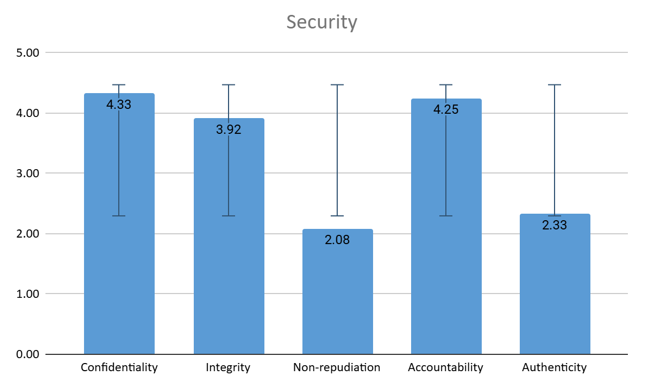
*Figure 13.* Security
Figure 13 shows the results of the ISO 25010 questionnaire on one of the characteristics, Security. On a scale of 1 (Very Ineffective) to 5 (Very Effective), the graph above displays users’ satisfaction with the app's security measures.
Confidentiality refers to the degree to which a product or system ensures that data is accessible only to those authorized to have access ("ISO/IEC 25010:2011 Quality Models", 2011; Pratama et.al., 2021). It includes metrics such as the probability of unauthorized access and the length of the encryption key used (Pratama et.al., 2021). Based on the graph above, the overall average of “Confidentiality” is 4.33 which is interpreted as “Effective”. The mean score indicates that users express satisfaction regarding “Confidentiality”, given that it operates as an offline application, data access is restricted to the local files exclusively.
Integrity reflects the extent to which the system data from unauthorized modification or deletion, whether due to malicious action protects or error ("ISO/IEC 25010:2011 Quality Models", 2011; Pratama et.al., 2021). Based on the graph, the integrity score is 3.92, interpreted as “Effective.” This suggests that when users tested the app, they felt it reliably maintained the accuracy and consistency of data, protecting it from unintended modification or deletion. Users appeared confident that the app’s functions effectively safeguarded its data, keeping it stable and trustworthy throughout their usage, which aligns with their expectations for data integrity.
Non-repudiation is the degree to which actions or events within the app can be proven, preventing denial of those actions later ("ISO/IEC 25010:2011 Quality Models", 2011; Pratama et.al., 2021). The graph above indicates a non-repudiation score of 2.08, interpreted as “Ineffective”, indicating that users are not satisfied with the application's non-repudiation, as the application does not have a feature to retrieve information like history. Hence, users are unable to access previously entered information.
Accountability represents the extent to which actions performed within the app can be traced uniquely to the responsible entity ("ISO/IEC 25010:2011 Quality Models", 2011; Pratama et.al., 2021). As per the graph, accountability scored 4.25, interpreted as “Effective,” indicating that users are content with the application system in terms of data tracking. Since the application does not contain tracking, users feel safe while using the application, indicating that their personal data remains confidential.
Authenticity measures the ability to confirm the identity of a subject or resource within the system ("ISO/IEC 25010:2011 Quality Models", 2011; Pratama et.al., 2021). The graph shows an authenticity score of 2.33, interpreted as “Ineffective.” indicating that users are not satisfied with the application's Authenticity. However, given that the application does not retain sensitive data susceptible to unauthorized access, the inclusion of an authenticity feature will only delay the application's immediate operational performance.
Overall, the Security characteristic had an average score of 3.38, which is interpreted as “Moderately Effective” according to the Likert scale. This shows that users express an average satisfaction with the application’s security features and data protection measures. However, despite achieving an Effective rating, there is still room for improvement in the app’s security functionality. Specifically, Integrity, which scored the lowest among the sub-characteristics with an average score of 3.92, indicates an area where enhancements can be made.
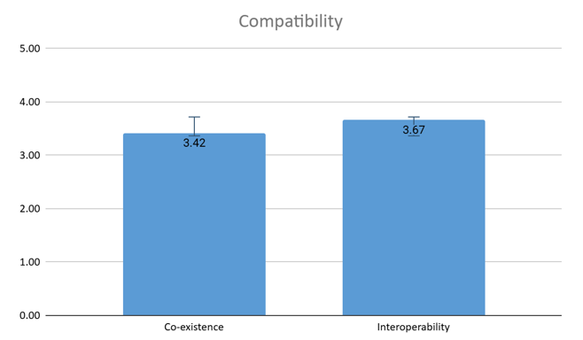
*Figure 14.* Compatibility
Figure 14 shows the ISO 25010 questionnaire, focusing on one of it's attributes, "Compatibility" refers to the ability of a system or product to interact and function with other systems or products within a shared environment (Pratama et.al., 2021; "ISO/IEC 25010:2011 Quality Models", 2011 ).
Co-existence is the ability of a product to carry out its necessary tasks effectively while sharing resources and an environment with other products without having an impact on any other products ("ISO/IEC 25010:2011 Quality Models", 2011; Pratama et.al., 2021). According to the graph above, co-existence has an average score of 3.42, interpreted as "Effective". This shows that users find the application efficient in carrying out necessary tasks without it influencing other products. By using the app, the users were able to perform their tasks without affecting other applications or devices.
Interoperability refers to the ability of two or more systems or products to exchange and use information without causing harm to any other system or product ("ISO/IEC 25010:2011 Quality Models", 2011; Pratama et.al., 2021). The graph above implied that the average score of Interoperability is 3.67 which is interpreted as "Effective". This attribute shows that the users are pleased with the accurate information that the application provided them. With this attribute users were able to use the application without worrying about it causing problems with other things they are using.
Overall, the average score of Compatibility is 3.54 which indicates that the users find the application's features are generally "Effective", suggesting a level of satisfaction with the overall functionality. Among the two of the attributes, Co-existence was interpreted as the lowest with an average score of 3.42. On the other hand, Interoperability was interpreted as the highest with an average score of 3.67. However, even though it is interpreted as an effective characteristic of the app, the development still needs more improvement. Specifically, the Co-existence, this means the application needs to enhance on carrying out necessary products without it affecting any other product while functioning.
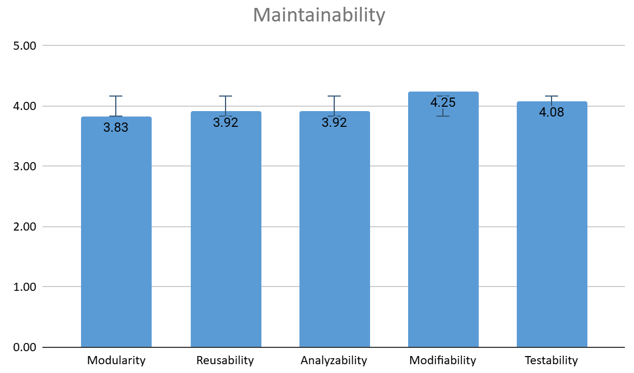
*Figure 15.* Maintainability
Figure 15 represents the results of the ISO 25010 questionnaire for the attribute Maintainability. On a scale of 1 (Very Ineffective) to 5 (Very Effective), the graph above illustrates user satisfaction. This attribute has five sub characteristics, namely: Modularity, Reusability, Analyzability, Modifiability , and Testability.
Modularity describes how much a system is composed of uncorrelated components, allowing changes in one component without affecting others ("ISO/IEC 25010:2011 Quality Models", 2011; Pratama et.al., 2021). The average score for modularity is 3.83, interpreted as “Effective”, demonstrating that while users typically find the modular structure beneficial, the component organization may be improved. A well-structured modular system makes updates and adjustments simpler, but users may find it difficult to navigate or comprehend component interactions, which could make it more difficult for them to implement changes that work.
Reusability is the property that an asset can be used in more than one system or to create new assets ("ISO/IEC 25010:2011 Quality Models", 2011; Pratama et.al., 2021). The average score for reusability is 3.92, interpreted as “Effective”, this implies that even though some parts are made to be reused, there might be chances to improve this feature for increased effectiveness and uniformity in subsequent development initiatives.
Analyzability refers to how well users can evaluate the effect of a modification or troubleshoot a problem with the software ("ISO/IEC 25010:2011 Quality Models", 2011; Pratama et.al., 2021). The average score for analyzability is 3.92, interpreted as “Effective”, indicating that while users may struggle to comprehend how to effectively analyze the application's performance, the overall experience is satisfactory. This indicates that even though users consider the application to be useful, there can be difficulties in comprehending performance indicators or decoding outcomes. Simplifying these elements may improve user experience and enable more informed decisions based on analysis.
Modifiability is defined as the ability to make changes to the software quickly and without introducing defects or other quality degradation ("ISO/IEC 25010:2011 Quality Models", 2011, Pratama et.al., 2021). In the graph above, the average score for modifiability is 4.25, interpreted as “Effective”, this suggests that the vast majority of users can implement any improvements without sacrificing what is good. This also suggests a solid design basis for the software, allowing users to feel empowered to make improvements while preserving the essential features they recognize. Such assurance about the application's maintainability fosters proactive ongoing improvement in addition to satisfaction for users.
Testability is a property of software that can be measured by establishing test criteria to ensure that the software meets those criteria ("ISO/IEC 25010:2011 Quality Models", 2011; Urera & Balahadia, 2019). The average score for testability is 4.08 which is interpreted as “Effective”, this indicates that users are confident in their abilities to test the program, however there may be small areas for improvement. This implies that although testing procedures are generally successful, testing tools or methodology should be improved. By filling in these little holes, a more reliable testing environment could result, guaranteeing that every feature is fully tested.
In general, maintainability is interpreted as “Effective”. Which means users are satisfied with different characteristics of the application’s maintainability. However, user feedback indicates a demand for additional features that align with their preferences. By addressing these issues, the development team may improve user happiness and ensure that the program remains flexible to changing needs and conditions.
User Feedback
The data gathering instrument also provided an opportunity to collect user feedback on the bat identification app’s overall performance, which has been clustered into two main themes, namely: Fulfilling its Function: BAT ID’s Practicality, BAT ID’s Potential for Improvement. The first theme consists of five sub-themes which are: The app’s usefulness and usability; Ease of use; General advantages of the app; and Application aesthetics. The second theme consists of two sub-themes namely: Enhancements on the app's user interface; and User preferences.
Fulfilling Its Function: BAT ID’s Practicality
The theme focuses on the app’s positive aspects as experienced by users. It highlights how well the app fulfills its functions, primarily identification. These insights were gathered from individuals who have personally used the application.
A Useful and Functional App
The bat identification app is designed to meet diverse user needs, especially those new to identifying bat species. Users find it very practical, as the app provides fast results, which is important in field conditions where working quickly is needed (Joly et al., 2014). The app’s detailed descriptions make identification easier and help users learn more about different species (Kore Schlottau, 2020). Studies confirm that mobile applications can save time in identifying species compared to traditional, time-consuming methods (Hart et al., 2023). The app’s "Bat Guide" feature enhances accuracy by providing visual aids and comprehensive information, allowing users to distinguish closely related species even when specimens are less than ideal (Bilyk et al., 2020). In summary, this app is practical, functional, and performs well in actual field scenarios.
"It is practical, especially if you are a beginner."
"Results appear quickly."
*"Not time consuming compared to manually using the key."**
Ease of Use
Ease of use refers to the degree to which users perceive a technical system to be effortless and manageable (Wicaksono, 2020; Amin et al., 2014 ). It is one of the bases in user satisfaction, encompassing various aspects, including the design of the user interface (UI), the responsiveness of the app, and the overall user experience according to Durgekar et al. (2024).
The application has a simple user interface that allows for quick navigation. When launching the application, its functions are immediately distinct and put in conveniently accessible areas. Function such as the identify button — the main use of the application, is easily found in the main menu which makes users easily identify bats after inputting morphometric measurements. Furthermore, in the identify feature, there are different text-boxes where users can easily input the measurement, ensuring that the application is straightforward on functions. This streamlined design shortens the time required for navigating, improving overall simplicity of use.
"Its UI is simple."
"It's straightforward, which is a good thing because it makes it easy to use."
"Quick to understand"
General Advantages of the Application
Citizen science is characterized by the active participation of the general public in scientific research endeavors and has emerged as a prevalent method for gathering information across a diverse array of scientific topics (Hognogi, 2023). However it is also important to note that citizen science projects often operate with limited funding and resources, projects may require specialized equipment for monitoring certain species or habitats but lack the financial means to supply these tools (Reilly & Starrs, 2023). Hence, with the aid of a mobile application, citizen scientists are able to utilize available resources, thus reducing costs (Drill, 2013)
"Portable compared to a guide book.”
"It's good since it is offline and does not use the internet."
"Can be useful in low light areas such as caves."
Application Aesthetics
Research has shown that aesthetically pleasing designs foster positive perceptions of usability, as users often associate beauty with functionality, leading to increased trust and engagement (David & Glore, 2010; Tractinsky et al., 2000). A well-chosen color scheme and carefully crafted design elements are instrumental in evoking emotional responses that influence users' satisfaction and decision-making processes, making aesthetics essential not only for usability but also for creating a distinct brand identity in competitive markets (Shi et al,. 2021).
Building on these insights, our app incorporates a clean, intuitive design tailored to meet the needs of field researchers and enthusiasts. The choice of bright, blue-toned color scheme creates an engaging interface, complemented by a white background for optimal readability and reduced strain, making it suitable for various environments. The organized layout and clear navigation pathways allow users to quickly locate features like the "Identify Bat" and "Bat Guide" sections, enhancing usability. Alignments and spacing are optimized for readability and accessibility across different devices, ensuring that measurements can be entered accurately. As a result, the application is clean, visually engaging and has good text alignment.
"The app has a clean layout and easy-to-read design."
"Graphics and color choices make it visually engaging."
"Alignment of the text is good"
BAT ID’s Areas for Improvement
In this section, we focus on areas where users have identified limitations in the BAT ID app. These areas represent features or functionalities that users feel could be enhanced to improve their overall experience and efficiency in identifying bat species.
Enhancements on the App's User Interface
The primary aim of user interface design, also referred to as human-computer interaction (HCI), is the user's relationship with the computer system. The entire process depends on how the interface interacts with the user and how the system interacts with its interface (Miranda, 2011). Examples of this include desktop appearances, keyboards, mice, and display screens. It also describes how a user interacts with an application or website through the use of visual and aural elements such as buttons, typefaces, animations, and sounds (Hashemi-Pour & Churchville, 2024).
To enhance the user experience, there are several common themes that users want in the application, such as enhancing the design, completeness, and first impression. First, the enhancement of design would make the application visually appealing; by improving the application’s design, users will stay engaged and scour the application. Next, completeness plays a crucial role in an application's functionality. Based on users’ feedback, they noticed that some pictures of bat species are missing; hence, by adding the missing pictures, users would be able to visually recognize the bat species. Finally, is the first impression of the users in the app’s main menu; they felt that the main menu is visually unappealing. Therefore, by intensifying the design of the main menu, the application creates a great first impression and encourages users to remain engaged with the application.
"Not enough design"
"Some pictures are missing"
"The main menu is not visually appealing"
User Preferences
An important factor in preserving and improving an app's quality is user preference. Developers can learn a great deal about the app's advantages and disadvantages from the viewpoint of the user by aggressively seeking and implementing user input.(Koubek & Lee, 2009). Developers can more efficiently prioritize features, enhance usability, and resolve issues by having a thorough understanding of user preferences. Higher user satisfaction and retention rates result from this repeated procedure of integrating user feedback, which eventually produces a better app that better suits the demands of its intended user base. Additionally, personalized redirection enabled users to manage the delivery and presentation of information, giving them control over their digital interactions (Yang Y., 2009, Murano 2002)
For a better quality of the application, the users suggest adding several features respectively—A user recommended that the app is easier to access if there was a function added for a single-access key from the guidebook. This way, they can easily gather information and narrow the user's search down until a final statement identifies the bat species. Users’ have also suggested adding a history feature, which would allow users to easily access information they had previously viewed. Another user suggested incorporating a quiz game about bat species. This feature would not only make learning fun but also provide a practical way for users to practice identifying different bat species.
"The addition of a single-access key from the guide book”
"A history feature for retrieving information”
"A quiz game on bat species would be a fun way to learn and practice.”
strong
In conclusion, an offline mobile application was successfully designed and developed using the waterfall methodology that utilizes morphological measurements from the taxonomic key of Ingle and Heaney (1992). Features such as “Identify bat” and “Bat Guide” as well as an “About” feature were developed. After which, the application was evaluated by field users and bat biologists via invitations done on Messenger and Gmail containing the app’s apk file and questionnaire.
Results show that all 8 characteristics of the model quality criteria are interpreted as effective, with the exception of security as being moderately effective. The application was also subjected to feedback by field users and experts. Knowing the responses of the users, they are clustered into two main themes, namely: Fulfilling Its Function: BAT ID’s Practicality, BAT ID’s Potential for Improvement. The first theme consists of five sub-themes, which are: the app’s usefulness and usability; ease of use; general advantages of the app; and application aesthetics. The last theme consists of two sub-themes, namely: enhancements on the app's user interface and user preferences, all of which were evaluated. In light of this it is concluded that the use of the application was positively received and that it can be used as an effective bat identification tool.
strong
Based on the results, the mobile application received varying feedback from its users. It is encouraged to develop an iOS-compatible version of the app to improve its user base accessibility. It is also suggested to revise the measurement ranges of the application to accompany the changing variations of bat morphology (Wood & Cousins, 2023). Lastly, to contribute to the scientific understanding and decision-making for environmental citizen science, it is recommended that the application improve its citizen science qualities.
Furthermore, it is encouraged to enhance the user interface as users find the design too basic. It is also recommended to add additional features like history for retrieving previously stored information, a trivia feature, a quiz game, settings for customization, a tutorial, and adjusting the font size for better readability. By implementing different suggestions from users, the overall user experience will improve the application's quality.
References
Agarwal, H. (2024, April 25). Advantages and disadvantages of using React Native in 2023. Techexactly. https://techexactly.com/blogs/advantages-and-disadvantages-of-using-react-native
Amberong, A. G. T., Fidelino, J. S., Duco, R. A. J., Ledesma, M. M., Duya, M. V., Ong, P. S., & Duya, M. R. M. (2020). Toward a Philippine Bat Call Library: Acoustic Characterization of Insectivorous Bats in Bulacan, Luzon Island, Philippines. Philippine Journal of Science, 150(S1), 473–485. https://doi.org/10.56899/150.S1.36
Aroral, H.K (2021). Waterfall Process Operations in the Fast-paced World: Project Management Exploratory Analysis. International Journal of Applied Business and Management Studies. https://www.ijabms.com/wp-content/uploads/2021/05/05_ARORAL_PB.pdf
Atha, H. (2022, March 15). React Native vs React js - What’s the Difference. Moveo Apps. https://www.moveoapps.com/blog/react-native-vs-reactjs-differences-pros-and-cons/
Bilyk, Z. I., Shapovalov, Y. B., Shapovalov, V. B., Megalinska, A. P., Andruszkiewicz, F., & Dołhańczuk-Śródka, A. (2020). Assessment of mobile phone applications feasibility on plant recognition: comparison with Google Lens AR-app. International Workshop on Augmented Reality in Education. https://www.semanticscholar.org/paper/Assessment-of-mobile-phone-applications-feasibility-Bilyk-Shapovalov/45787086268f2ab261aca712e426b6bcbc895fa0
Cao, Z., Li, C., Wang, K., He, K., Wang, X., Yu, W. (2023). A fast and accurate identification
model for Rhinolophus bats based on fine-grained information. Scientific Reports, 13, 16375.
https://www.nature.com/articles/s41598-023-42577-1
Coşkunserçe, O. (2024). Use of a mobile plant identification application and the out‐of‐school learning method in biodiversity education. Ecology and Evolution, 14, e10957. https://pmc.ncbi.nlm.nih.gov/articles/PMC11022149/
Churylov, M. (2024, July 19). React Native Pros, Cons, and Top Lessons Learned | MindK. Web and Mobile App Development Company — MindK.com. https://www.mindk.com/blog/react-native-pros-and-cons/
D’Ambra, S. (2018, July 20). The Benefits of React Native for Mobile App Development. ClearTech Interactive.
https://www.cleart.com/the-benefits-of-react-native-for-mobile-app-development.html
David, A., & Glore, P. R. (2010b). The impact of design and aesthetics on usability,
credibility, and learning in an online environment. Online Journal of Distance Learning Administration, 13(4). https://www.westga.edu/~distance/ojdla/winter134/david_glore134.pdf
Drill, S. (2013). Mobile applications for participatory science. Journal of Extension, 51(1).
https://doi.org/10.34068/joe.51.01.11
Durgekar, S., Rahman, S., Naik, S., & Kanchan, S. (2024). A Review Paper on Design and
Experience of Mobile Applications. ICST Transactions on Scalable Information Systems. https://publications.eai.eu/index.php/sis/article/view/4959/2844
Frick, W. F. (2013). Acoustic monitoring of bats, considerations of options for long-term
monitoring. Therya, 4(1), 69-78.
Gade, D. (2013). Chapter 2: Literature review. In The Evaluation of Software Quality (pp.
12–27)..
Hashemi-Pour, C., & Churchville, F. (2024, April 30). user interface (UI). Search App
Architecture.
https://techtarget.com/searchapparchitecture/definition/user-interface-UI
Heaney, L. R., Dolar, M. L., Balete, D. S., Esselstyn, J. A., Rickart, E. A., Sedlock, J. L.
(2010). A Synopsis of the mammalian fauna of the Philippine Islands. http://archive.fieldmuseum.org/philippine_mammals/index.html
Hooper, S., Amelon S. K., Womack, K. M. (2017). Bat wing biometrics: using
collagen-elastin bundles in bat wings as a unique individual identifier. Journal of Mammalogy, 98(3):744-751. https://tinyurl.com/3jwamma5000041
Hognogi, G., Meltzer, M., Alexandrescu, F., & Ștefănescu, L. (2023c). The role of citizen
science mobile apps in facilitating a contemporary digital agora. Humanities and Social Sciences Communications, 10(1).
https://doi.org/10.1057/s41599-023-02358-7
Hughes, A. C., & Grumbine, R. E. (2023). The Kunming-Montreal Global Biodiversity
Framework: What it does and does not do, and how to improve it. Frontiers in Environmental Science.
https://www.frontiersin.org/journals/environmental-science/articles/10.3389/fenvs.2023.1281536/full
ISO/IEC 25010:2011. (n.d.-b). ISO.
https://www.iso.org/standard/35733.html
Ingle, N.R. and Heaney, L.R. (1992). A Key to the Bats of the Philippine Islands. Fieldiana,
Zoology, New Ser., No. 69, Publication (Field Museum of Natural History), 1440, Field Museum of Natural History, Chicago. - References - Scientific Research Publishing. https://www.scirp.org/reference/referencespapers?referenceid=2950432
Joly, A., Goëau, H., Bonnet, P., Bakić, V., Barbe, J., Selmi, S., Yahiaoui, I., Carré, J., Mouysset, E., Molino, J. F., Boujemaa, N., Barthélémy, D. (2014). Interactive plant identification based on social image data. Ecological Informatics, 23, 22-34. https://www.sciencedirect.com/science/article/pii/S157495411300071X?pes=vor&utm_source=wiley&getft_integrator=wiley
Krivek, G., Gillert, A., Harder, M., Fritze, M., Frankowski, K., Timm, L.,
Meyer-Olbersleben, L., von Lukas, U. F., Kerth, G., & van Schaik, J. (2023). BatNet: a deep learning-based tool for automated bat species identification from camera trap images. Remote Sensing in Ecology and Conservation, 9(6), 759-774.
https://zslpublications.onlinelibrary.wiley.com/doi/full/10.1002/rse2.339
Kunz, T. H., Braun de Torrez, E., Bauer, D., Lobova, T., & Fleming, T. H. (2011). Ecosystem
services provided by bats. Annals of the New York Academy of Sciences, 1223(1), 1–38. https://www.researchgate.net/publication/50935511_Ecosystem_services_provided_by_bats
Kwiatkowski, M., & Sielezniew, M. (2024). Using mobile device built-in microphones to monitor bats: a new opportunity for large-scale participatory science initiatives. Biodiversity and Conservation. https://link.springer.com/article/10.1007/s10531-024-02818-9
Lama, J. M. N., Caballero, E. (2023). Bat diversity and its distribution in Mount Gutom
Protected Landscape, Zamboanga del Norte, Philippines. Biodiversitas Journal of Biological Diversity, 24(10):5495-5502.
Lemen, C., Freeman, P. W., White, J. A., Andersen, B. R. (2015). The problem of low
agreement among automated identification programs for acoustical surveys of bats. Western North American Naturalist, 75(2), 218-225.
Mannotra, V. (2024, October 23). React vs React Native: When to use which? | BrowserStack. BrowserStack. https://www.browserstack.com/guide/react-vs-react-native
Miranda, M. G. (2011). THE IMPORTANCE OF GRAPHIC USERS INTERFACE,
ANALYSIS OF GRAPHICAL USER INTERFACE DESIGN IN THE CONTEXT OF HUMAN-COMPUTER INTERACTION. https://library.iated.org/view/GUTIERREZMIRANDA2011IMP
Moran, K. (2024, June 3). The Aesthetic-Usability effect. Nielsen Norman Group. https://www.nngroup.com/articles/aesthetic-usability-effect/?fbclid=IwZXh0bgNhZW0CMTEAAR1BkQuyUCrTMLFQUyl7dl-QSvd5naNYFtu4ptB9LNHSmEV8EA6KZ7VbRaY_aem_YHR1susp9Z1AsctUbo3rOg
Obura, D., Agrawal, A., DeClerck, F., Donaldson, J., Dziba, L., Emery, M. R., Friedman, K.,
Fromentin, J.-M., Garibaldi, L. A., Mulongoy, J., Navarrete-Frias, C., Mosig Reidl, P., Roe, D., Timoshyna, A. (2023). Prioritizing sustainable use in the Kunming-Montreal global biodiversity framework. PLOS Sustain Transform 2(1): e0000041. https://journals.plos.org/sustainabilitytransformation/article?id=10.1371/journal.pstr.0
Perrig, S. a. C., Ueffing, D., Opwis, K., & Brühlmann, F. (2023). Smartphone app aesthetics influence users’ experience and performance. Frontiers in Psychology, 14. https://doi.org/10.3389/fpsyg.2023.1113842
Pratama, A. A., & Mutiara, A. B. (2021c). Software Quality Analysis for Halodoc
Application using ISO 25010:2011. International Journal of Advanced Computer Science and Applications, 12(8).
https://doi.org/10.14569/ijacsa.2021.012084
Quibod, M. N. R. M., Alviola, P. A., de Guia, A. P. O., Cuevas, V. C., Lit, I. L., Jr., Pasion, B.
O. (2019). Diversity and threats to cave-dwelling bats in a small island in the southern Philippines. Journal of Asia-Pacific Biodiversity, 481-487. https://www.sciencedirect.com/science/article/pii/S2287884X18303169
Relox, R., Florece, L. M., Baril, J. A., & Coladilla, J. (2014). Assessment of Fruit Bats and its
Food Preferences in Mt. Apo Natural Park, Kidapawan City, North Cotabato, Philippines. Journal of Environmental Science and Management, 17(1), 12-20.
https://www.nature.com/articles/s41599-023-02358-7
Schlottau, K., Eggerbauer, E., Freuling, C. M., Beer, M., Müller, T., Hoffmann, B. (2020).
Rapid molecular species identification of indigenous bats from Germany for surveillance purposes. Infection, Genetics and Evolution, 78, 104140.
https://www.sciencedirect.com/science/article/abs/pii/S1567134819303661
Shiv Technolabs Private Limited. (2023, January 23). 7 Advantages of using React Native for mobile app development. https://www.linkedin.com/pulse/7-advantages-using-react-native-mobile-app-development-
Shi, A., Huo, F., & Hou, G. (2021). Effects of design aesthetics on the perceived value of a
product. Frontiers in Psychology, 12.
https://doi.org/10.3389/fpsyg.2021.670800
Tanalgo, K. C., & Hughes, A. C. (2018). Bats of the Philippine Islands—A review of
research directions and relevance to national-level priorities and targets. Mammalian Biology, 91, 46–56.
https://www.sciencedirect.com/science/article/abs/pii/S1616504717303853
Tanalgo, K. C., & Hughes, A. C. (2019). Priority-setting for Philippine bats using a practical
approach to guide effective species conservation and policy-making in the Anthropocene. Hystrix, Italian Journal of Mammalogy, 30(1), 74-83.
Tanalgo, K. C., Tabora, J. A. G. (2015). Cave-dwelling bats (Mammalia: Chiroptera) and conservation concerns in South central Mindanao, Philippines. Journal of
Threatened Taxa, 7(15):8185–8194.
Tofilski, A. (2018). DKey software for editing and browsing dichotomous keys. ZooKeys,
735(735), 131–140.
Tractinsky, N., Katz, A. S., & Ikar, D. (2000). What is beautiful is usable. Interacting with Computers, 13(2), 127–145. https://academic.oup.com/iwc/article-abstract/13/2/127/898608
Unger, S., Rollins, M. A., Tietz, A., & Dumais, H. (2020). iNaturalist as an engaging tool for identifying organisms in outdoor activities. Journal of Biological Education, 55(3), 1-11. https://www.researchgate.net/publication/339944716_iNaturalist_as_an_engaging_tool_for_identifying_organisms_in_outdoor_activities
Urera, F. L., & Balahadia, F. F. (2019b). ICTEachMUPO: An Evaluation of Information
E-Learning module system for faculty and students. DOAJ (DOAJ: Directory of Open Access Journals). https://doi.org/10.25147/ijcsr.2017.001.1.31
Wildlife Acoustics, Inc. (2018). Kaleidoscope Pro 5 User Guide.
http://condor.wildlifeacoustics.com/Kaleidoscope.pdf
Wood, H., & Cousins, S. a. O. (2023). Variability in bat morphology is influenced by
temperature and forest cover and their interactions. Ecology and Evolution, 13(1).
https://doi.org/10.1002/ece3.9695
Wicaksono, A., & Maharani, A. (2020b). The effect of perceived usefulness and perceived
ease of use on the technology acceptance model to use online travel agency. Journal of Business Management Review, 1(5), 313–328.
https://doi.org/10.47153/jbmr15.502020
Xing, C., Zhao, J., Yan-hua, C., Wei, Z., Hughes, A. C. (2020). Automatic
standardized processing and identification of tropical bat calls using deep learning approaches. Biological Conservation, 241, 108269.
https://www.sciencedirect.com/science/article/abs/pii/S0006320719308961